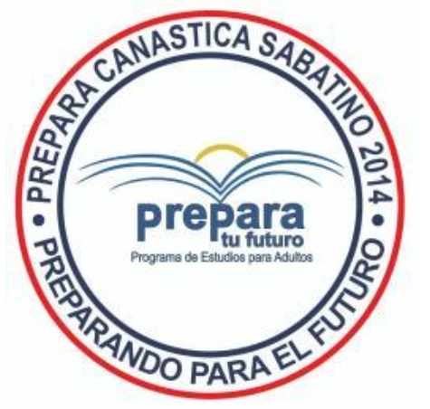

Aprende · Practica · Evalúate · Retroalimenta
Consulta tu horario de clases
Elige tu nivel, grado y sección. Al seleccionar una asignatura, podrás consultar sus opciones de AulaQR.
1. Identifica tu grupo
Cargando horario institucional…
Área de Estudiantes · Modalidad EPJA sabatina

Elige tu nivel, grado y sección. Al seleccionar una asignatura, podrás consultar sus opciones de AulaQR.